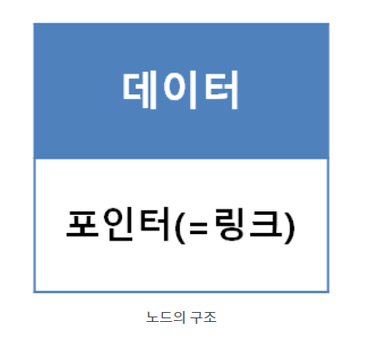
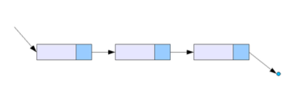
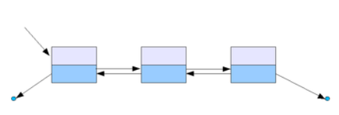
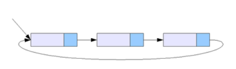

LinkedList
linkedlist란?
각 노드가 데이터와 포인터를 가지고 한 줄로 연결되어 있는 방식으로 데이터를 저장하는 자료 구조이다. 이름에서 말하듯이 데이터를 담고 있는 노드들이 연결되어 있는데, 노드의 포인터가 다음이나 이전의 노드와의 연결을 담당하게 된다.
연결 리스트의 종류로는 단일 연결 리스트, 이중 연결 리스트 등이 있다. 연결 리스트는 늘어선 노드의 중간지점에서도 자료의 추가와 삭제가 O(1)의 시간에 가능하다는 장점을 갖는다. 그러나 배열이나 트리 구조와는 달리 특정 위치의 데이터를 검색해 내는데에는 O(n)의 시간이 걸리는 단점도 갖고 있다.
단일 연결 리스트

다음 노드에 대한 참조만을 가진 가장 단순한 형태의 연결 리스트이다. 가장 마지막 원소를 찾으려면 얄짤없이 리스트 끝까지 찾아가야 하기 때문에(O(n)), 마지막 원소를 가리키는 참조를 따로 가지는 형태의 변형도 있다.
이 자료구조는 Head노드를 참조하는 주소를 잃어버릴 경우 데이터 전체를 못 쓰게 되는 단점이 있다. 다음 노드를 참조하는 주소 중 하나가 잘못되는 경우에도 체인이 끊어진 양 거기부터 뒤쪽 자료들을 유실한다. 따라서 안정적인 자료구조는 아니다.
이중 연결 리스트

다음 노드의 참조뿐만 아니라 이전 노드의 참조도 같이 가리키게 하면 이중 연결 리스트가 된다. 뒤로 탐색하는 게 빠르다는 단순한 장점 이외에도 한 가지 장점이 더 있는데, 단순 연결 리스트는 현재 가리키고 있는 노드를 삭제하는 게 한 번에 안 되고 O(n)이 될 수밖에 없는데 비해[4]이중 연결 리스트에서 현재 노드를 삭제하는 것은 훨씬 간단하다. 대신 관리해야 할 참조가 두 개나 있기 때문에 삽입이나 정렬의 경우 작업량이 더 많고 자료구조의 크기가 약간 더 커진다.
단일 연결 리스트보다는 손상에 강한 편이다. Head와 Tail노드를 갖고 있다면 둘 중 하나를 가지고 전체 리스트를 순회할 수 있기 때문에 끊어진 체인을 복구하는 게 가능하다. 단일 연결 리스트는 Tail노드로는 리스트 순회가 불가능하고 Head노드 유실시 전체 자료를 다 잃어버린다. 단점은 이런 보정 알고리즘을 구현하지 않았을 경우에는 오히려 손상에 더 취약해진다는 것이다. 예를 들어 next 포인터는 경신을 했는데 prev포인터는 경신하지 않았을 경우 prev포인터를 따라가는 순회에서 도달 불가능한 '잃어버린' 노드가 발생한다.
원형 연결 리스트

단순 연결 리스트에서 마지막 원소가 널 대신 처음 원소를 가리키게 하면 원형 연결 리스트가 된다. 이와 비슷하게, 이중 연결 리스트의 처음과 끝을 서로 이으면 이중 원형 연결 리스트를 만들 수 있다.